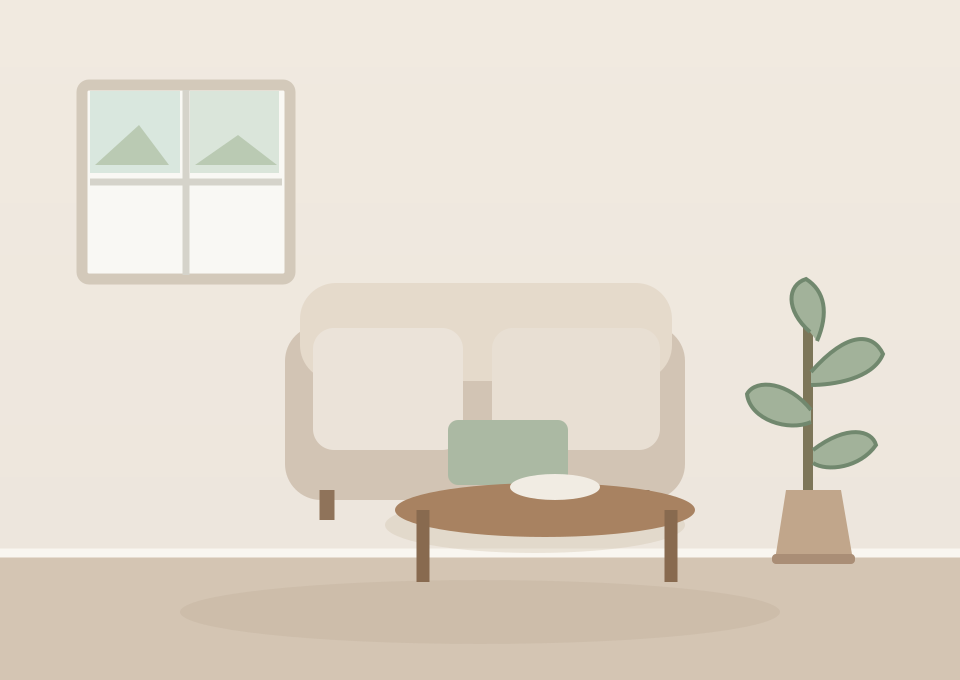
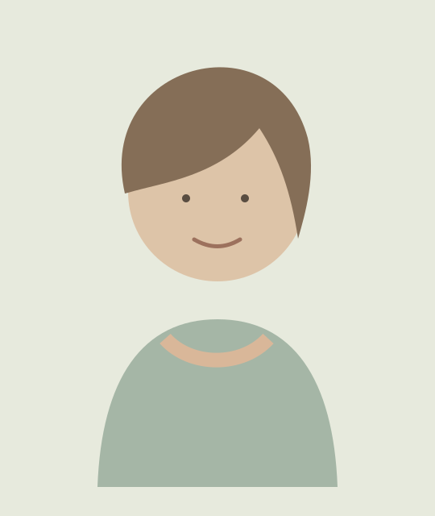

NORDIC STYLE · PERSONAL TOUCH
Make room for calm.
Home styling and interior design inspired by Scandinavian nature, light and simplicity.
Tuuli Design brings a fresh Nordic perspective to homes in Budenheim, Mainz and Wiesbaden.
Explore our services

MEET THE FOUNDER
Hello, I'm Tiina.
I'm a Finnish mother living in Germany. Interior design is my passion, and I have studied interior design to develop my skills.
I love light colours, natural materials and spaces that feel beautiful without losing their warmth. Through Tuuli Design, I bring a Nordic point of view to local homes.
My work focuses on the Budenheim, Mainz and Wiesbaden area.
A home that feels like you.
Simple details, timeless choices and practical ideas for everyday living.
Browse the portfolio →